Four jobs, one time each: help the fire brigade, the police, the pharmacy and Bob the Guh Builder, and earn their work clothes.
Vier beroepen, elk één keer: help de brandweer, de politie, de apotheek en Bob de Guhbouwer, en verdien hun werkkleding.
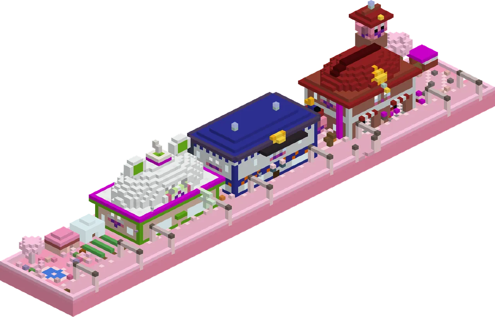
The BeroepenstraatDe Beroepenstraat
The Knuffeldal town got a new street along its east side: the Beroepenstraat, with the Brandweerkazerne (red brick, two guh fire trucks, a hose tower and a roof like a giant fire helmet), a little square with a guh statue wearing three hats, the Politiebureautje (blue and orange stripes, the knabbelkluis, a knuffelcel and a roof like a giant police cap) and the Apotheekje (a glowing green cross and a round guh-head roof with a big mortar), with a herb garden and a little park behind it.
Het Knuffeldal-stadje kreeg een nieuwe straat langs de oostkant: de Beroepenstraat, met de Brandweerkazerne (rode baksteen, twee guh-brandweerautootjes, een slangentoren en een dak als een reuzenbrandweerhelm), een pleintje met een guhstandbeeld met drie hoeden op, het Politiebureautje (blauw-oranje strepen, de knabbelkluis, een knuffelcel en een dak als een reuzenpolitiepet) en het Apotheekje (een gloeiend groen kruis en een rond guhkopdak met een grote vijzel), met een kruidentuin en een parkje erachter.
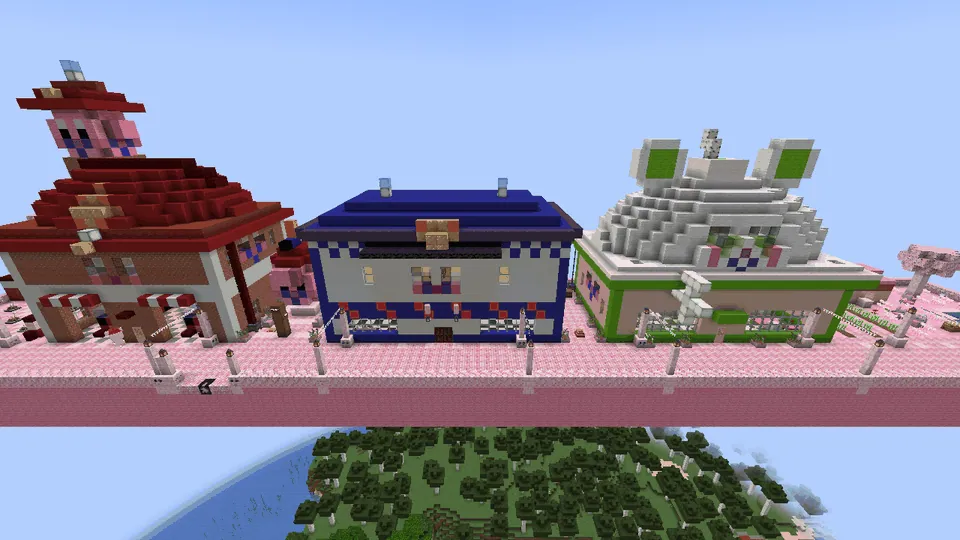
Four jobs, one time eachVier klusjes, elk één keer
| GuhGuh | WhereWaar | The jobHet klusje | RewardBeloning |
|---|---|---|---|
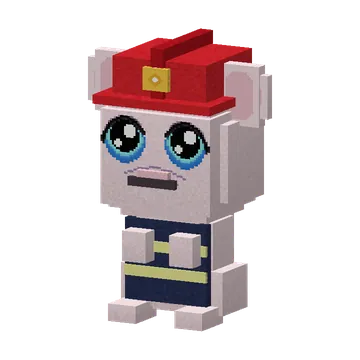 Brandweercommandant Blusguh | BrandweerkazerneBrandweerkazerne | Tatuu-tatuu! The marshmallow campfires on the oefenterrein flared up. Take the guh-brandslang, hold right-click to spray them out, then climb the ladder and help the guhtje out of the tree.Tatuu-tatuu! De marshmallowkampvuurtjes op het oefenterrein laaien op. Pak de guh-brandslang, houd rechtsklik ingedrukt om ze uit te spuiten, klim dan de ladder op en help het guhtje uit de boom. | Firefighter helmet + jacketBrandweerhelm + -jas |
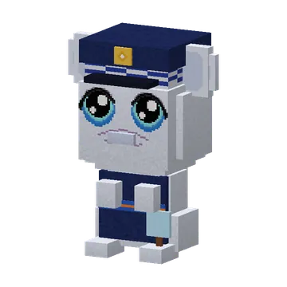 Inspecteur Vahoegsma | PolitiebureautjePolitiebureautje | De Knabbeldief-zaak: a Mika pinched the town's knabbel stock from the knabbelkluis! Follow the pink paw prints to the stolen sack (a different hiding place each time). The Knabbeldief giggles and runs off.De Knabbeldief-zaak: een Mika heeft de knabbelvoorraad van het stadje uit de knabbelkluis gepikt! Volg de roze pootafdrukken naar de gestolen zak (elke keer een andere verstopplek). De Knabbeldief giechelt en rent weg. | Police cap + uniformPolitiepet + -uniform |
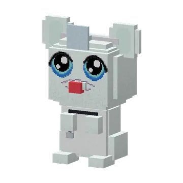 Dokter Snotneus-guh | ApotheekjeApotheekje | Snotje is snotterig (hatsjoe!). Get a kaasmelk from the doctor, pick 3 snotkruidjes in the herb garden, mix them in the mengketel and give Snotje the kaasmelkdrankje. Hatsjoe... VAHOEG!Snotje is snotterig (hatsjoe!). Haal een kaasmelk bij de dokter, pluk 3 snotkruidjes in de kruidentuin, meng ze in de mengketel en geef Snotje het kaasmelkdrankje. Hatsjoe... VAHOEG! | Doctor coat + stethoscopeDoktersjas + stethoscoop |
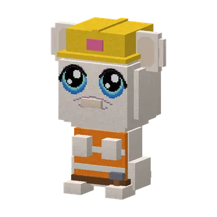 Bob de Guhbouwer | a guh village (1 in 3)een guhdorp (1 op 3) | Bob's house has no roof yet. Bring him 16 planks and 8 kaasknabbels (his lunch), then lay a roof tile on every ghost tile. The last one raises the flag. Kunnen wij het maken?Het huisje van Bob heeft nog geen dak. Breng hem 16 planken en 8 kaasknabbels (zijn lunch), en leg dan op elk spookpannetje een dakpan. De laatste hijst de vlag. Kunnen wij het maken? | Builder helmet + safety vestBouwhelm + veiligheidshesje |
Every job is one time only; afterwards the guh just thanks you. The reward is the work outfit (as items: eat them to unlock). All four: Guh van alle markten.
Elk klusje doe je maar één keer; daarna bedankt de guh je alleen nog. De beloning is het werkpakje (als voorwerpen: eet ze op om ze te ontgrendelen). Alle vier: Guh van alle markten.
The beroepen guhsDe beroepenguhs
Blusguh, Inspecteur Vahoegsma, Dokter Snotneus-guh and Bob de Guhbouwer.
Blusguh, Inspecteur Vahoegsma, Dokter Snotneus-guh en Bob de Guhbouwer.
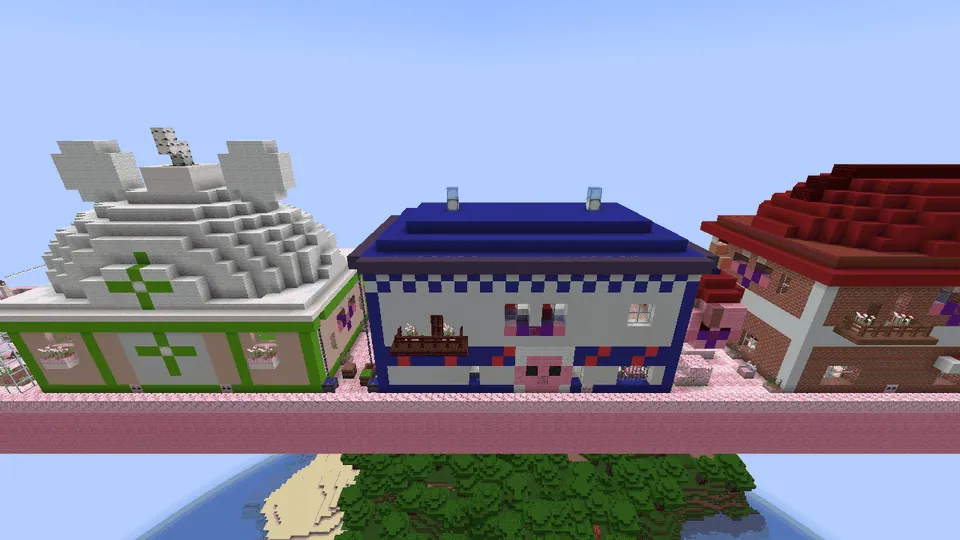
From the backVan achteren
The backs on the little achterpad are nice too: a balcony with flower boxes and a big guh face at the kazerne, barred cell windows and a balcony with blue lamps at the politie, a glowing green cross and flower boxes at the apotheek, and rain chains into water butts.
Ook de achterkanten aan het achterpaadje zijn mooi: een balkon met bloembakken en een groot guhgezicht bij de kazerne, tralieraampjes en een balkon met blauwe lampjes bij de politie, een gloeiend groen kruis en bloembakken bij de apotheek, en regenkettingen in regentonnen.
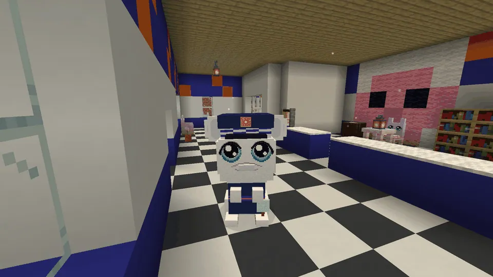
Inside the PolitiebureautjeIn het Politiebureautje
Inspecteur Vahoegsma behind his counter.
Inspecteur Vahoegsma achter zijn balie.
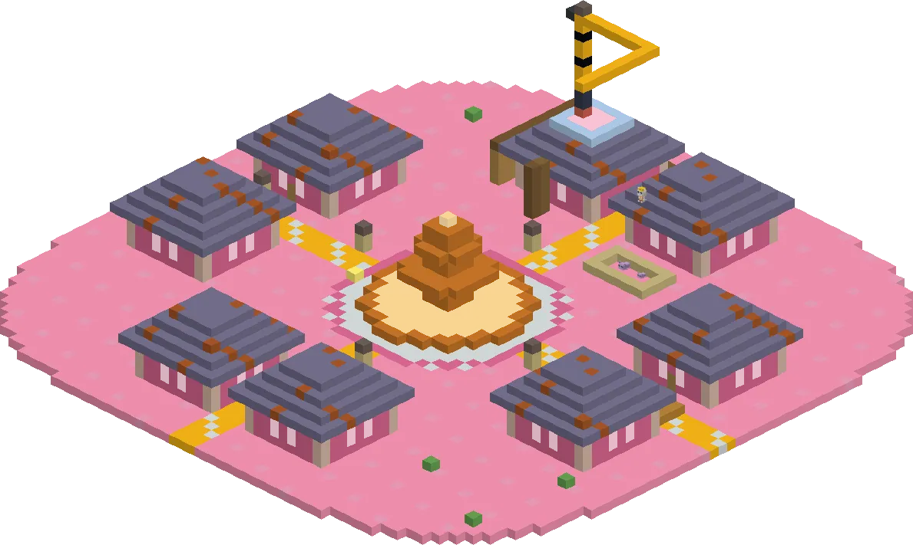
Bob's bouwplaatsDe bouwplaats van Bob
One in three new guh villages has a half-built house with scaffolding, a little yellow crane with a pallet of roof tiles, a cement mixer and a building sign. Its roof is still see-through ghost tiles.
Eén op de drie nieuwe guhdorpen heeft een half gebouwd huisje met steigers, een geel kraantje met een pallet dakpannen, een cementmolen en een bouwbord. Het dak is nog van doorzichtige spookpannetjes.
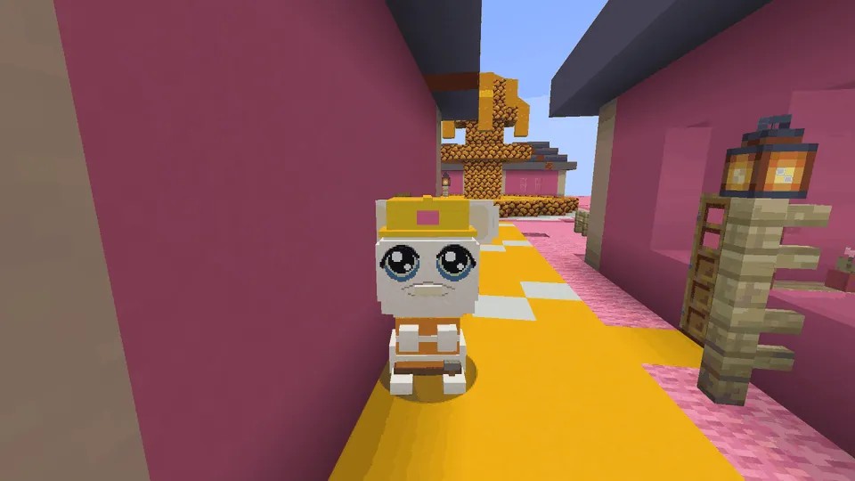
Bob de Guhbouwer
"Kunnen wij het maken? JA, WIJ KUNNEN HET!" (When the next player comes, the Mikas have "borrowed" the tiles again.)
"Kunnen wij het maken? JA, WIJ KUNNEN HET!" (Als de volgende speler komt, hebben de Mika's de dakpannen weer "geleend".)
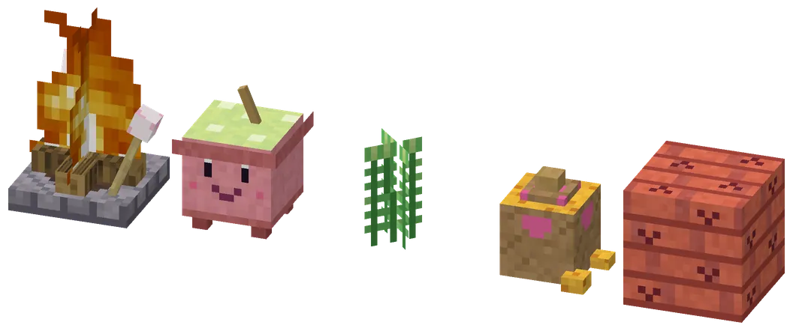
Blocks of the jobsBlokken van de klusjes
The marshmallow campfire pit, the mengketel, snotkruid, a sack of stolen knabbels and a roof tile. The campfire pit and the mengketel can be crafted.
De marshmallowkampvuurkuil, de mengketel, snotkruid, een zak gepikte knabbels en een dakpan. De kampvuurkuil en de mengketel kun je zelf maken.
At a glanceIn het kort
- AdvancementsVooruitgangen
- Tatuu-tatuu! · De Knabbeldief-zaak · Hatsjoe... VAHOEG! · Kunnen wij het maken? · Guh van alle markten ★